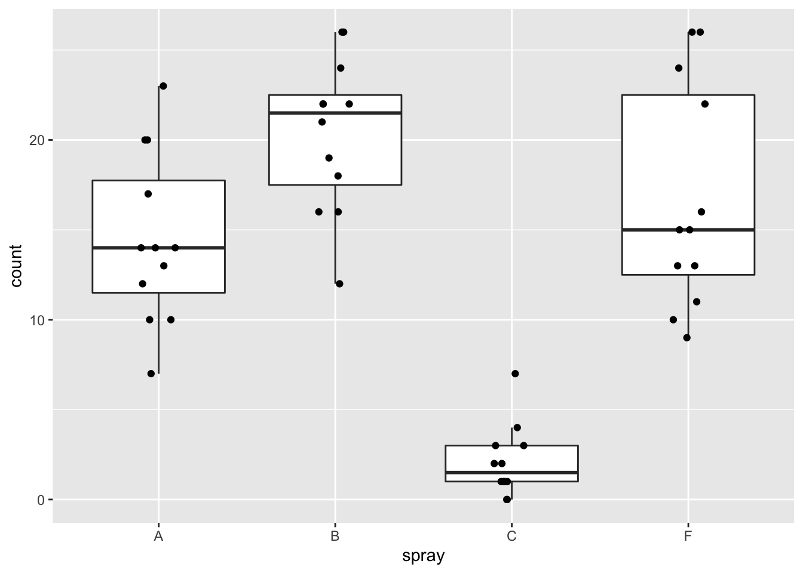
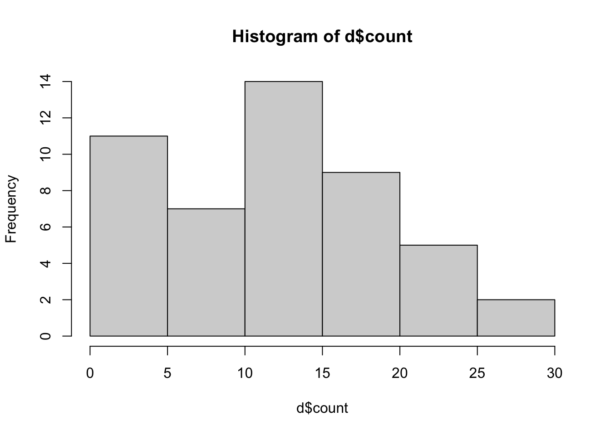
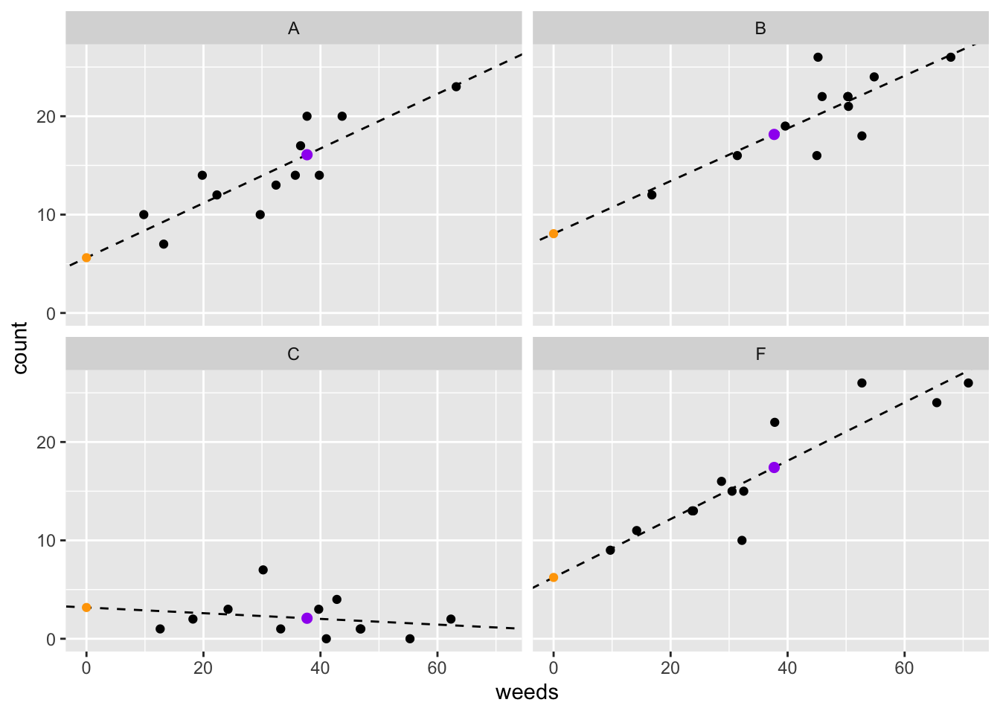
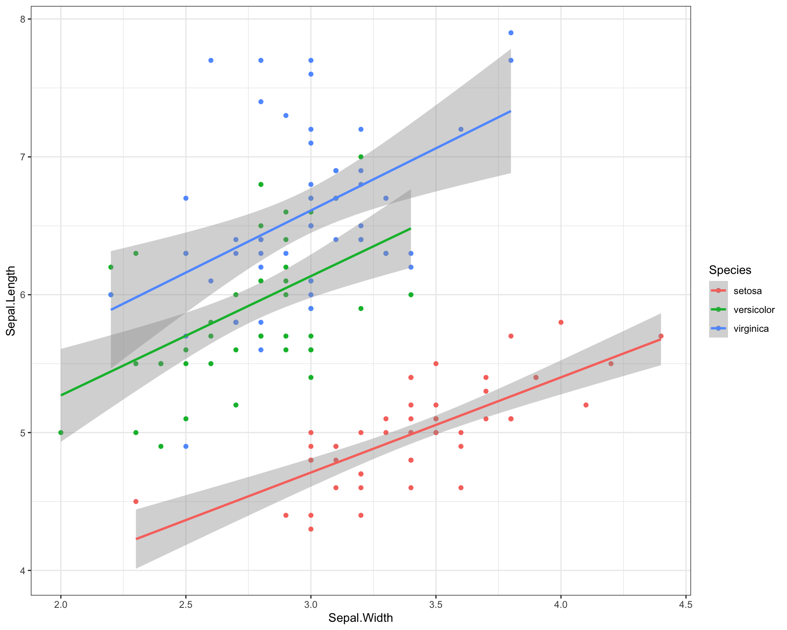
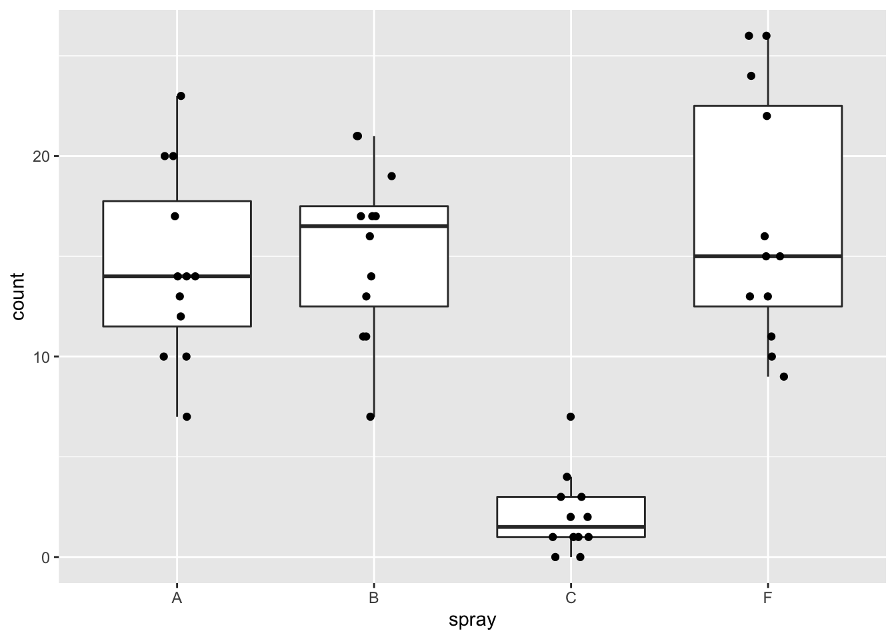
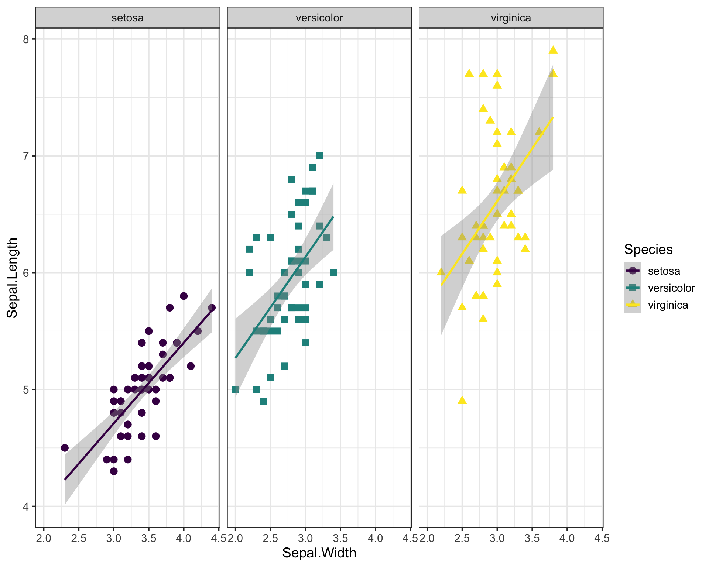
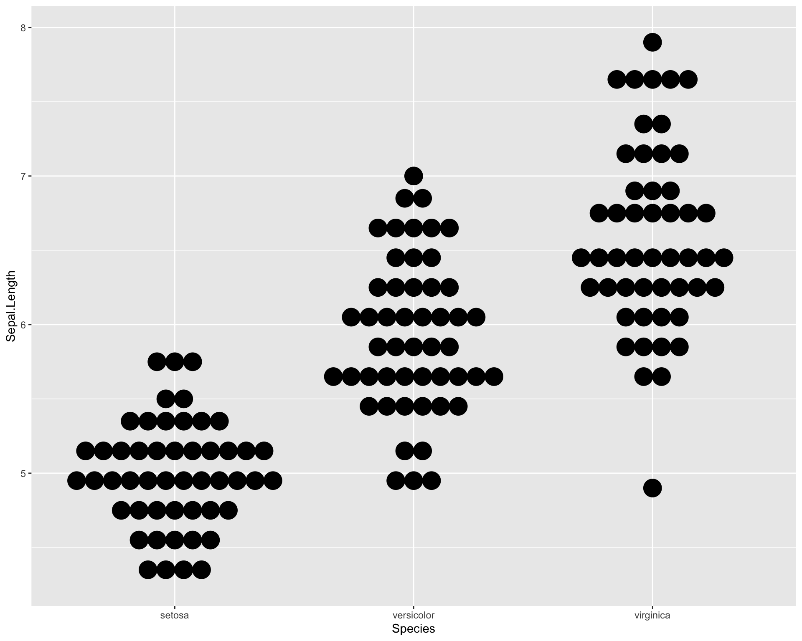
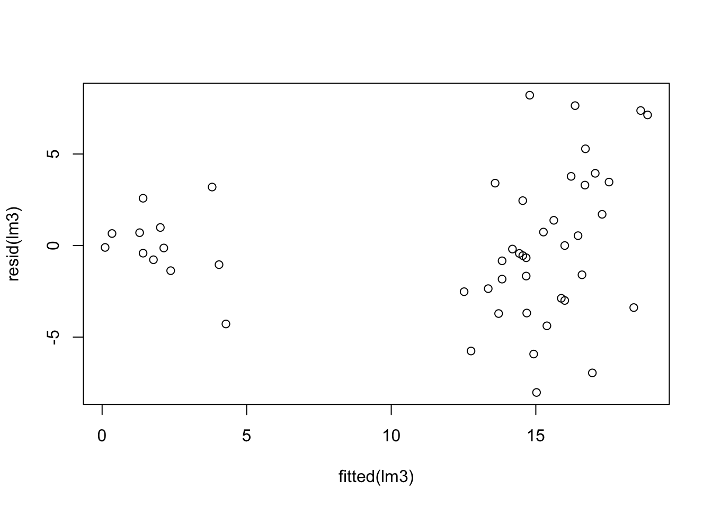
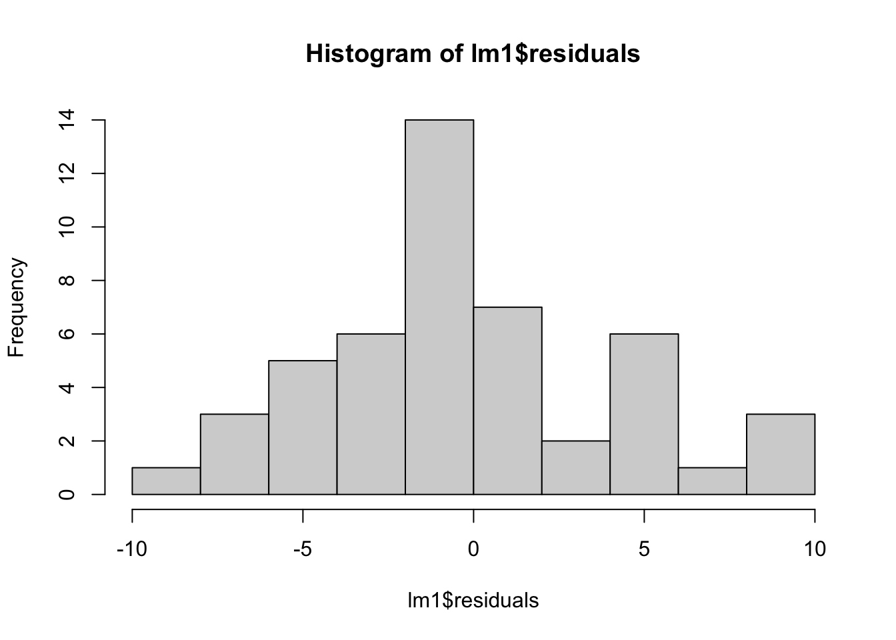
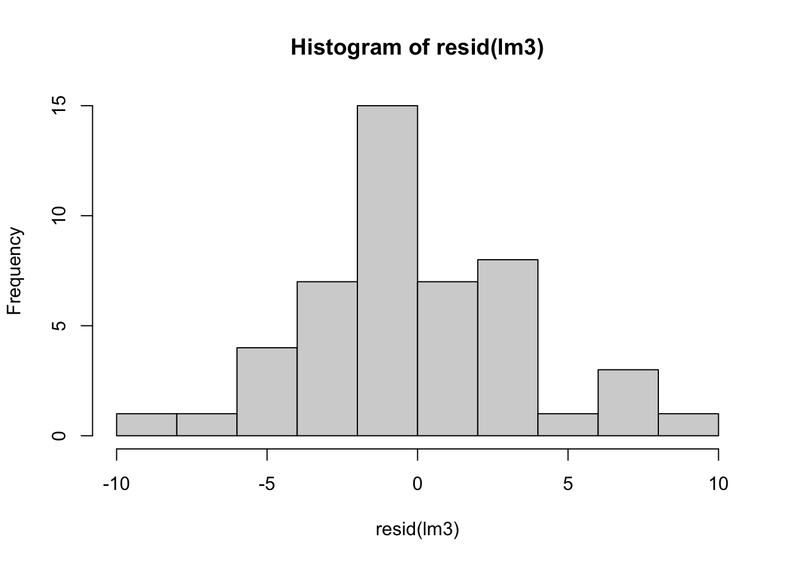

Chapter 5 Module 5
5.1 5A. ANCOVAs in R
We will need the following libraries:
library(tidyverse) ## ── Attaching packages ─────────────────────────────────────── tidyverse 1.3.1 ──## ✔ ggplot2 3.3.6 ✔ purrr 0.3.4
## ✔ tibble 3.1.8 ✔ dplyr 1.0.9
## ✔ tidyr 1.2.0 ✔ stringr 1.4.0
## ✔ readr 2.0.1 ✔ forcats 0.5.1## Warning: package 'ggplot2' was built under R version 4.1.2## Warning: package 'tibble' was built under R version 4.1.2## Warning: package 'tidyr' was built under R version 4.1.2## Warning: package 'dplyr' was built under R version 4.1.2## ── Conflicts ────────────────────────────────────────── tidyverse_conflicts() ──
## ✖ dplyr::filter() masks stats::filter()
## ✖ dplyr::lag() masks stats::lag()library(car) ### helpful for analyzing linear models## Loading required package: carData##
## Attaching package: 'car'## The following object is masked from 'package:dplyr':
##
## recode## The following object is masked from 'package:purrr':
##
## somelibrary(emmeans) ### helpful for getting means from linear modelsHere we assemble data with a covariate (don’t worry about the code):
set.seed(17)
data("InsectSprays")
d <- InsectSprays %>% filter(spray=='A'|spray=='B'|spray=='C'|spray=='F') %>%
droplevels()
d$count[13:24] <- d$count[13:24]+5
d$weeds <- abs(round(rnorm(48,2*d$count,10),1))
d$weeds[25:36] <- c(55.3,46.8,30.2,62.3,24.2,33.2,18.2,12.6,39.7,41.0,46.9,42.8)Let’s plot the raw data:
ggplot(d, aes(x=spray,y=count)) +
geom_boxplot(outlier.shape = NA) +
geom_jitter(height=0,width=.1) 
Let’s run a model with counts as a function of spray (an ANOVA) and get the pairwise means:
anova_means <- emmeans(lm(count~spray, data=d), pairwise~spray)
anova_means## $emmeans
## spray emmean SE df lower.CL upper.CL
## A 14.50 1.32 44 11.849 17.15
## B 20.33 1.32 44 17.683 22.98
## C 2.08 1.32 44 -0.567 4.73
## F 16.67 1.32 44 14.016 19.32
##
## Confidence level used: 0.95
##
## $contrasts
## contrast estimate SE df t.ratio p.value
## A - B -5.83 1.86 44 -3.136 0.0155
## A - C 12.42 1.86 44 6.676 <.0001
## A - F -2.17 1.86 44 -1.165 0.6518
## B - C 18.25 1.86 44 9.812 <.0001
## B - F 3.67 1.86 44 1.971 0.2143
## C - F -14.58 1.86 44 -7.841 <.0001
##
## P value adjustment: tukey method for comparing a family of 4 estimatesNow let’s plot out the data with weed cover:
ggplot(d, aes(x=weeds,y=count)) +
geom_point() +
facet_wrap(~spray) +
geom_smooth(method='lm')## `geom_smooth()` using formula 'y ~ x'
5.1.1 ANCOVA: multiple intercept model
Let’s run our ANCOVA model:
lm1i <- lm(count ~ spray + weeds, data=d)Let’s get an ANOVA table with Type II sums of squares (aka Type III SS):
Anova(lm1i, type=2) ## Anova Table (Type II tests)
##
## Response: count
## Sum Sq Df F value Pr(>F)
## spray 2098.05 3 68.134 2.229e-16 ***
## weeds 471.88 1 45.973 2.679e-08 ***
## Residuals 441.37 43
## ---
## Signif. codes: 0 '***' 0.001 '**' 0.01 '*' 0.05 '.' 0.1 ' ' 1Don’t use the base anova! Switch terms around in the model and see what happens:
anova(lm1i) ## Analysis of Variance Table
##
## Response: count
## Df Sum Sq Mean Sq F value Pr(>F)
## spray 3 2256.23 752.08 73.270 < 2.2e-16 ***
## weeds 1 471.88 471.88 45.973 2.679e-08 ***
## Residuals 43 441.37 10.26
## ---
## Signif. codes: 0 '***' 0.001 '**' 0.01 '*' 0.05 '.' 0.1 ' ' 1summary(lm1i) ## model coefficients##
## Call:
## lm(formula = count ~ spray + weeds, data = d)
##
## Residuals:
## Min 1Q Median 3Q Max
## -6.030 -2.155 -0.057 1.744 6.526
##
## Coefficients:
## Estimate Std. Error t value Pr(>|t|)
## (Intercept) 7.69502 1.36479 5.638 1.23e-06 ***
## sprayB 2.88374 1.37840 2.092 0.0424 *
## sprayC -13.64507 1.32044 -10.334 3.16e-13 ***
## sprayF 1.48599 1.31180 1.133 0.2636
## weeds 0.21271 0.03137 6.780 2.68e-08 ***
## ---
## Signif. codes: 0 '***' 0.001 '**' 0.01 '*' 0.05 '.' 0.1 ' ' 1
##
## Residual standard error: 3.204 on 43 degrees of freedom
## Multiple R-squared: 0.8607, Adjusted R-squared: 0.8478
## F-statistic: 66.45 on 4 and 43 DF, p-value: < 2.2e-16Here we can calculate estimated marginal mean for each group (ie. groups means after accounting for the effect of weeds). We can extract the emmean means (ie. group means after accounting for the effect of weeds):
ancova_means <- emmeans(lm1i, pairwise~spray)
ancova_means## $emmeans
## spray emmean SE df lower.CL upper.CL
## A 15.71 0.942 43 13.815 17.61
## B 18.60 0.960 43 16.663 20.53
## C 2.07 0.925 43 0.204 3.93
## F 17.20 0.928 43 15.329 19.07
##
## Confidence level used: 0.95
##
## $contrasts
## contrast estimate SE df t.ratio p.value
## A - B -2.88 1.38 43 -2.092 0.1720
## A - C 13.65 1.32 43 10.334 <.0001
## A - F -1.49 1.31 43 -1.133 0.6716
## B - C 16.53 1.33 43 12.406 <.0001
## B - F 1.40 1.35 43 1.035 0.7298
## C - F -15.13 1.31 43 -11.547 <.0001
##
## P value adjustment: tukey method for comparing a family of 4 estimatesThis code is just for adding features of the model to the graph:
lm1i_coef <- as.data.frame(emmeans(lm1i, ~spray))Now let’s extract intercepts and add slopes into new dataframe:
lm1i_coef2 <- as.data.frame(emmeans(lm1i, ~spray, at=list(weeds=0)))
lm1i_coef2$slope <- coef(lm1i)[5]We can now plot the data with the fitted model:
ggplot(data=d, aes(x=weeds,y=count)) +
geom_point() +
facet_wrap(~spray) +
geom_abline(data=lm1i_coef2,
aes(intercept=emmean, slope=slope)) +
geom_point(data=lm1i_coef2,
aes(x=0,y=emmean),color="red") +
geom_point(data=lm1i_coef,
aes(x=mean(d$weeds),y=emmean),
color="blue", size=2)
5.1.2 ANCOVA: multiple intercept AND slope model
This is how we do an ANCOVA with multiple intercept and slopes:
lm1is <- lm(count ~ spray + weeds + spray:weeds, data=d)Another way to code the above would be:
lm(count ~ spray * weeds, data=d)##
## Call:
## lm(formula = count ~ spray * weeds, data = d)
##
## Coefficients:
## (Intercept) sprayB sprayC sprayF weeds
## 5.619631 2.440328 -2.441189 0.613378 0.277584
## sprayB:weeds sprayC:weeds sprayF:weeds
## -0.009947 -0.306581 0.018897Let’s get an ANOVA table and a summary of the model:
Anova(lm1is, type=2)## Anova Table (Type II tests)
##
## Response: count
## Sum Sq Df F value Pr(>F)
## spray 2098.05 3 108.0786 < 2.2e-16 ***
## weeds 471.88 1 72.9254 1.489e-10 ***
## spray:weeds 182.54 3 9.4033 7.898e-05 ***
## Residuals 258.83 40
## ---
## Signif. codes: 0 '***' 0.001 '**' 0.01 '*' 0.05 '.' 0.1 ' ' 1summary(lm1is)##
## Call:
## lm(formula = count ~ spray + weeds + spray:weeds, data = d)
##
## Residuals:
## Min 1Q Median 3Q Max
## -5.780 -1.323 -0.246 1.230 5.843
##
## Coefficients:
## Estimate Std. Error t value Pr(>|t|)
## (Intercept) 5.619631 1.837847 3.058 0.003965 **
## sprayB 2.440328 3.408876 0.716 0.478227
## sprayC -2.441189 2.788364 -0.875 0.386534
## sprayF 0.613378 2.439710 0.251 0.802781
## weeds 0.277584 0.052663 5.271 4.98e-06 ***
## sprayB:weeds -0.009947 0.080228 -0.124 0.901948
## sprayC:weeds -0.306581 0.074015 -4.142 0.000173 ***
## sprayF:weeds 0.018897 0.066459 0.284 0.777614
## ---
## Signif. codes: 0 '***' 0.001 '**' 0.01 '*' 0.05 '.' 0.1 ' ' 1
##
## Residual standard error: 2.544 on 40 degrees of freedom
## Multiple R-squared: 0.9183, Adjusted R-squared: 0.904
## F-statistic: 64.26 on 7 and 40 DF, p-value: < 2.2e-16Here we calculate estimated marginal mean for each group (ie. groups means after accounting for the effect of weeds):
ancova_is_means <- emmeans(lm1is, pairwise~spray) ## NOTE: Results may be misleading due to involvement in interactionsancova_is_means## $emmeans
## spray emmean SE df lower.CL upper.CL
## A 16.09 0.794 40 14.481 17.69
## B 18.15 0.885 40 16.362 19.94
## C 2.09 0.734 40 0.601 3.57
## F 17.41 0.741 40 15.913 18.91
##
## Confidence level used: 0.95
##
## $contrasts
## contrast estimate SE df t.ratio p.value
## A - B -2.065 1.19 40 -1.738 0.3182
## A - C 14.000 1.08 40 12.949 <.0001
## A - F -1.326 1.09 40 -1.221 0.6175
## B - C 16.065 1.15 40 13.972 <.0001
## B - F 0.739 1.15 40 0.641 0.9182
## C - F -15.326 1.04 40 -14.687 <.0001
##
## P value adjustment: tukey method for comparing a family of 4 estimatesWe can calculate the slope for each group:
ancova_is_slopes <- emtrends(lm1is, pairwise~spray, var="weeds")
ancova_is_slopes## $emtrends
## spray weeds.trend SE df lower.CL upper.CL
## A 0.278 0.0527 40 0.171 0.3840
## B 0.268 0.0605 40 0.145 0.3900
## C -0.029 0.0520 40 -0.134 0.0761
## F 0.296 0.0405 40 0.215 0.3784
##
## Confidence level used: 0.95
##
## $contrasts
## contrast estimate SE df t.ratio p.value
## A - B 0.00995 0.0802 40 0.124 0.9993
## A - C 0.30658 0.0740 40 4.142 0.0010
## A - F -0.01890 0.0665 40 -0.284 0.9919
## B - C 0.29663 0.0798 40 3.717 0.0033
## B - F -0.02884 0.0728 40 -0.396 0.9787
## C - F -0.32548 0.0659 40 -4.936 0.0001
##
## P value adjustment: tukey method for comparing a family of 4 estimatesWe can extract the emmean means (ie. group means after accounting for the effect of weeds):
lm1is_coef <- as.data.frame(emmeans(lm1is, ~spray))## NOTE: Results may be misleading due to involvement in interactionsAlso we can extract intercepts and add slopes into new dataframe:
lm1is_coef2a <- as.data.frame(emmeans(lm1is, ~spray, at=list(weeds=0)))## NOTE: Results may be misleading due to involvement in interactionslm1is_coef2b <- as.data.frame(emtrends(lm1is, var="weeds"))
lm1is_coef2 <- full_join(lm1is_coef2a,lm1is_coef2b,by="spray")Finally we can plot the data of the fitted model:
ggplot(data=d, aes(x=weeds,y=count)) +
geom_point() +
facet_wrap(~spray) +
geom_abline(data=lm1is_coef2, aes(intercept=emmean,
slope=weeds.trend), lty=2) +
geom_point(data=lm1is_coef2,
aes(x=0,y=emmean),
color="orange") +
geom_point(data=lm1is_coef,
aes(x=mean(d$weeds),y=emmean),
color="purple", size=2)
Here’s an alternative nice plot of the data with weed cover:
ggplot(d, aes(x=weeds,y=count)) +
geom_point() +
facet_wrap(~spray) +
geom_smooth(method='lm', color='black')+
theme_bw(base_size = 16)## `geom_smooth()` using formula 'y ~ x'
5.2 5B. Block Designs
5.2.1 Data and Plotting
Let’s load the packages and data:
library(tidyverse)
library(car)
data("InsectSprays")Now we can add our blocks to the data:
InsectSprays$block <- as.factor(rep(c(1:12), 6))
d <- InsectSprays %>%
filter(spray=='A'|spray=='B'|spray=='C'|spray=='F')
glimpse(d)## Rows: 48
## Columns: 3
## $ count <dbl> 10, 7, 20, 14, 14, 12, 10, 23, 17, 20, 14, 13, 11, 17, 21, 11, 1…
## $ spray <fct> A, A, A, A, A, A, A, A, A, A, A, A, B, B, B, B, B, B, B, B, B, B…
## $ block <fct> 1, 2, 3, 4, 5, 6, 7, 8, 9, 10, 11, 12, 1, 2, 3, 4, 5, 6, 7, 8, 9…We can graph the data by treatment group:
#plot data by treatment group
ggplot(d, aes(x=spray,y=count)) +
geom_boxplot(outlier.shape = NA) +
geom_jitter(height=0,width=.1)
A plot by treatment and block (note one observation per block):
ggplot(d, aes(x=spray,y=count)) +
geom_boxplot(outlier.shape = NA) +
geom_jitter(height=0,width=.1) +
facet_wrap(~block) #12 blocks
5.2.2 Models
This is a no block model:
lm1 <- lm(count~spray, data=d)
anova(lm1)## Analysis of Variance Table
##
## Response: count
## Df Sum Sq Mean Sq F value Pr(>F)
## spray 3 1648.73 549.58 26.478 6.091e-10 ***
## Residuals 44 913.25 20.76
## ---
## Signif. codes: 0 '***' 0.001 '**' 0.01 '*' 0.05 '.' 0.1 ' ' 1This is a block model (the block as a fixed effect).
lm2 <- lm(count~spray+block, data=d)
anova(lm2)## Analysis of Variance Table
##
## Response: count
## Df Sum Sq Mean Sq F value Pr(>F)
## spray 3 1648.73 549.58 32.5298 5.685e-10 ***
## block 11 355.73 32.34 1.9142 0.07378 .
## Residuals 33 557.52 16.89
## ---
## Signif. codes: 0 '***' 0.001 '**' 0.01 '*' 0.05 '.' 0.1 ' ' 15.2.3 Blocks as Random Effects
We need to load additional packages for this section
library(lme4)## Loading required package: Matrix##
## Attaching package: 'Matrix'## The following objects are masked from 'package:tidyr':
##
## expand, pack, unpacklibrary(lmerTest)##
## Attaching package: 'lmerTest'## The following object is masked from 'package:lme4':
##
## lmer## The following object is masked from 'package:stats':
##
## stepHere we set up a linear mixed effect model with a block as a random effect (random intercept):
# block as random effect
lm3 <- lmer(count~spray+(1|block), data=d)
anova(lm3)## Type III Analysis of Variance Table with Satterthwaite's method
## Sum Sq Mean Sq NumDF DenDF F value Pr(>F)
## spray 1648.7 549.58 3 33 32.53 5.685e-10 ***
## ---
## Signif. codes: 0 '***' 0.001 '**' 0.01 '*' 0.05 '.' 0.1 ' ' 1Now let’s compare the model for blocks as fixed vs. random effects:
# compare summary() for fixed vs. random blocking effect
summary(lm2)##
## Call:
## lm(formula = count ~ spray + block, data = d)
##
## Residuals:
## Min 1Q Median 3Q Max
## -7.6875 -1.6250 -0.1458 1.6458 7.9792
##
## Coefficients:
## Estimate Std. Error t value Pr(>|t|)
## (Intercept) 10.3542 2.2977 4.506 7.84e-05 ***
## sprayB 0.8333 1.6780 0.497 0.62275
## sprayC -12.4167 1.6780 -7.400 1.68e-08 ***
## sprayF 2.1667 1.6780 1.291 0.20561
## block2 0.5000 2.9064 0.172 0.86446
## block3 7.7500 2.9064 2.667 0.01178 *
## block4 4.2500 2.9064 1.462 0.15312
## block5 4.0000 2.9064 1.376 0.17801
## block6 2.7500 2.9064 0.946 0.35093
## block7 2.5000 2.9064 0.860 0.39590
## block8 4.7500 2.9064 1.634 0.11170
## block9 8.2500 2.9064 2.839 0.00770 **
## block10 8.7500 2.9064 3.011 0.00497 **
## block11 3.5000 2.9064 1.204 0.23707
## block12 2.7500 2.9064 0.946 0.35093
## ---
## Signif. codes: 0 '***' 0.001 '**' 0.01 '*' 0.05 '.' 0.1 ' ' 1
##
## Residual standard error: 4.11 on 33 degrees of freedom
## Multiple R-squared: 0.7824, Adjusted R-squared: 0.6901
## F-statistic: 8.475 on 14 and 33 DF, p-value: 2.595e-07summary(lm3)## Linear mixed model fit by REML. t-tests use Satterthwaite's method [
## lmerModLmerTest]
## Formula: count ~ spray + (1 | block)
## Data: d
##
## REML criterion at convergence: 266.3
##
## Scaled residuals:
## Min 1Q Median 3Q Max
## -1.95239 -0.58269 -0.07399 0.60466 1.99778
##
## Random effects:
## Groups Name Variance Std.Dev.
## block (Intercept) 3.861 1.965
## Residual 16.895 4.110
## Number of obs: 48, groups: block, 12
##
## Fixed effects:
## Estimate Std. Error df t value Pr(>|t|)
## (Intercept) 14.5000 1.3152 39.8617 11.025 1.13e-13 ***
## sprayB 0.8333 1.6780 33.0000 0.497 0.623
## sprayC -12.4167 1.6780 33.0000 -7.400 1.68e-08 ***
## sprayF 2.1667 1.6780 33.0000 1.291 0.206
## ---
## Signif. codes: 0 '***' 0.001 '**' 0.01 '*' 0.05 '.' 0.1 ' ' 1
##
## Correlation of Fixed Effects:
## (Intr) sprayB sprayC
## sprayB -0.638
## sprayC -0.638 0.500
## sprayF -0.638 0.500 0.500coef(lm3) ## prints model coefficients## $block
## (Intercept) sprayB sprayC sprayF
## 1 12.52004 0.8333333 -12.41667 2.166667
## 2 12.75883 0.8333333 -12.41667 2.166667
## 3 16.22128 0.8333333 -12.41667 2.166667
## 4 14.54975 0.8333333 -12.41667 2.166667
## 5 14.43035 0.8333333 -12.41667 2.166667
## 6 13.83338 0.8333333 -12.41667 2.166667
## 7 13.71398 0.8333333 -12.41667 2.166667
## 8 14.78854 0.8333333 -12.41667 2.166667
## 9 16.46007 0.8333333 -12.41667 2.166667
## 10 16.69885 0.8333333 -12.41667 2.166667
## 11 14.19156 0.8333333 -12.41667 2.166667
## 12 13.83338 0.8333333 -12.41667 2.166667
##
## attr(,"class")
## [1] "coef.mer"We can also print out the variance components from the model:
print(VarCorr(lm3), comp=c("Variance")) ## print variance components from model## Groups Name Variance
## block (Intercept) 3.8611
## Residual 16.8946Let’s check residuals:
plot(lm1$residuals~lm1$fitted.values) # check residuals of no block and block models
plot(resid(lm3)~fitted(lm3))
hist(lm1$residuals)
hist(resid(lm3))
Finally, we can compare estimated marginal means:
emmeans(lm2, pairwise~spray) ## fixed effect block## $emmeans
## spray emmean SE df lower.CL upper.CL
## A 14.50 1.19 33 12.086 16.9
## B 15.33 1.19 33 12.919 17.7
## C 2.08 1.19 33 -0.331 4.5
## F 16.67 1.19 33 14.253 19.1
##
## Results are averaged over the levels of: block
## Confidence level used: 0.95
##
## $contrasts
## contrast estimate SE df t.ratio p.value
## A - B -0.833 1.68 33 -0.497 0.9593
## A - C 12.417 1.68 33 7.400 <.0001
## A - F -2.167 1.68 33 -1.291 0.5749
## B - C 13.250 1.68 33 7.896 <.0001
## B - F -1.333 1.68 33 -0.795 0.8564
## C - F -14.583 1.68 33 -8.691 <.0001
##
## Results are averaged over the levels of: block
## P value adjustment: tukey method for comparing a family of 4 estimatesemmeans(lm3, pairwise~spray) ## random effect block## $emmeans
## spray emmean SE df lower.CL upper.CL
## A 14.50 1.32 39.9 11.842 17.16
## B 15.33 1.32 39.9 12.675 17.99
## C 2.08 1.32 39.9 -0.575 4.74
## F 16.67 1.32 39.9 14.008 19.32
##
## Degrees-of-freedom method: kenward-roger
## Confidence level used: 0.95
##
## $contrasts
## contrast estimate SE df t.ratio p.value
## A - B -0.833 1.68 33 -0.497 0.9593
## A - C 12.417 1.68 33 7.400 <.0001
## A - F -2.167 1.68 33 -1.291 0.5749
## B - C 13.250 1.68 33 7.896 <.0001
## B - F -1.333 1.68 33 -0.795 0.8564
## C - F -14.583 1.68 33 -8.691 <.0001
##
## Degrees-of-freedom method: kenward-roger
## P value adjustment: tukey method for comparing a family of 4 estimates